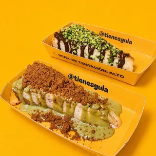
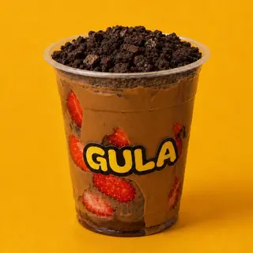

desde1 €
01 — EL CLÁSICO
Tarta mini
Cremosa, artesanal y en el tamaño justo para quitarte las ganas. El topping va a su aire.
Ponle tu toque ↗✳ EL ANTOJO TIENE DIRECCIÓN
Pequeños caprichos.
Grandes antojos.
Tarta de queso, fresas con toppings y helado soft. Tú eliges el antojo; aquí lo hacemos realidad.
01 / LOS DE SIEMPRE, COMO TE GUSTAN
En versión mini, en vaso o en espiral. Elige tu base y dale tu toque.

desdeCremosa, artesanal y en el tamaño justo para quitarte las ganas. El topping va a su aire.
Ponle tu toque ↗
fresaFresas frescas y salsas para mojar. Una combinación nueva cada vez que te apetezca.
Ponle tu toque ↗Suave, fresquito y con toppings a elegir. El verano puede durar lo que tú quieras.
Ponle tu toque ↗03 / AQUÍ MANDAS TÚ
Elige base y topping. Tu combinación, tus reglas.
Tu antojo será…Tarta mini con chocolate, pistacho, galleta y fruta
♡04 / UN POCO DE NOSOTROS
GULA nace del equipo de Melt con una idea muy sencilla: que quitarse un antojo sea fácil, rápido y a tu manera. Más pequeño, más ligero y con espacio para probar algo distinto.
¿Ya conoces a nuestra familia mayor?
Descubre Melt Cakes ↗MISMO EQUIPO, OTRA FORMA DE PECAR
GULA comparte casa con Melt Cakes, especialistas en tartas de queso artesanales. También están en Logroño, Burgos y Pamplona.
Pásate por Melt ↗06 / NOS VEMOS EN LOGROÑO
Calle Siervas de Jesús, 2
Logroño, La Rioja
En pleno centro, entre Gran Vía y Bretón de los Herreros. Busca la calle peatonal; nosotros ponemos el dulce.
El mapa se carga solo cuando lo pides.
Lun–mié13:00–22:00
Jueves13:00–00:00
Viernes13:00–00:30
Sábado12:00–00:30
Domingo12:00–22:00
Horario publicado en redes; confirma posibles cambios antes de venir.callejea un poco,
el premio merece la pena ♡
¿ALGUNA DUDA O IDEA DULCE?
Escríbenos y te responderemos en cuanto podamos.